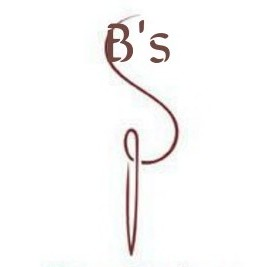

creativity My thing
Creativity is one of the this i love and it keep me going. My love for beauty (that is smiple but classic things motivated me. My favorate qoute is #Creativity is an everydaything! Web Programming has added to my fun Creativity list and others.
Photocronic Studio
Pictures speaks and say a lot.The beauty of pictures attracts Generally love taking pictues of the beauty of nature and all it contains and giving it some little king of effect to make it look more attractive.

B's Creations
Desinging is another thing i love doing at my lesure time. When i want to relax. Drawing styles of outfits making beaded stuff like earings chains ect with african print materials and so much more as ideas pop in my mind while working.